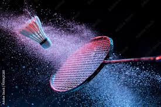
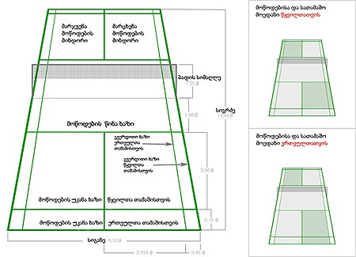

ბადმინტონი ოლიმპიური სპორტის სახეობა,რომელიც ჩოგბურთის თამაშს წააგავს.
გადაჭიმული ბადის თავზე ჩოგნით ისვრიან კორპის ან პლასტმასის ძაბრისებურ ბურთს (ვოლანს.)
მას ძირითადად დარბაზში თამაშობენ.
ბადმინტონი სისწრაფესა და ფიზიკურ გამძლეობას.
მართკუთხა კორტი იყოფა ბადით ნახევრად
ვინაიდან ბადმინტონი შეიძლება იყოს მაქსიმუმ ორი მოთამაშით თითო გუნდში,
მოედანი მონიშნულია წყვილებისა და ერთეულებისთვის.
მიუხედავად ამისა, ორადგილიანი კორტები უფრო ფართოა,
მაგრამ ორივეს სიგრძე ერთნაირია.
სასამართლოს სრული სიგანე არის ოცი ფუტი და აქვს მთლიანი ზომა ორმოცდაოთხი ფუტი.
მომსახურე კორტები დატანილია ხაზით ცენტრში, რომელიც ყოფს კორტის სიგანეს.
მოკლე მომსახურების ხაზი არის არა ფრენბურთის ზონა და ჩვეულებრივ აღინიშნება როგორც შვიდი ფუტი.
ორმაგი თამაშის დროს მოედანი ასევე აღინიშნება გრძელი სერვისის ხაზით,
რომლის ზომებია ორი ფუტი და ექვსი ინჩი უკანა კიდედან.
ბადე, როგორც წესი, არის ხუთი ფუტი სიმაღლე. თუმცა,
წმინდა პოსტები განლაგებულია წყვილების გვერდით, მაშინაც კი, როდესაც ერთეულთა თამაში მიმდენარეობს.
ბადმინტონისნ კანონები ან წესები და რეგულაციები არ მიუთითებდნენ სათამაშო მოედანზე ზემოთ
ჭერისთვის საჭირო მინიმალურ სიმაღლეზე. მიუხედავად ამისა,
ბადმინტონის თამაში მოითხოვს მაღალი ჭერის ქონას ფრენბურთის გაცვლისთვის.
ბადმინტონი, რა თქმა უნდა, შესანიშნავი სპორტია ყველასთვის,
განსაკუთრებით მათთვის, ვისაც უყვარს „ყველაფერი ოფლი“
სხვა მოთამაშეებთან კონტაქტის თვალსაზრისით „ზედმეტად ფიზიკურად“ მიღების გარეშე.
ბადმინტონის თამაში არის სპორტი, რომელიც ნამდვილად უწყობს ხელს ჯანსაღი ცხოვრების წესს და კეთილდღეობას.
